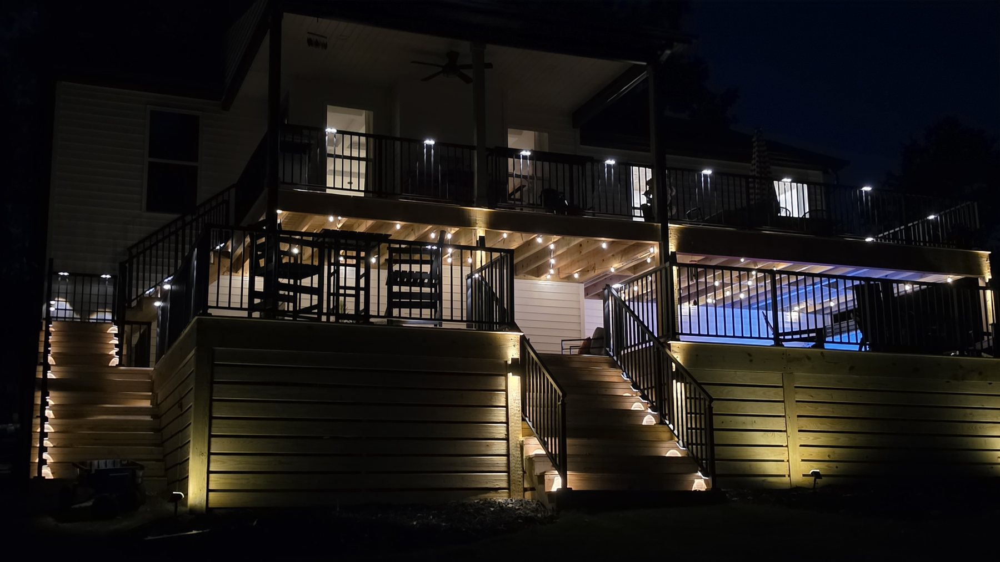
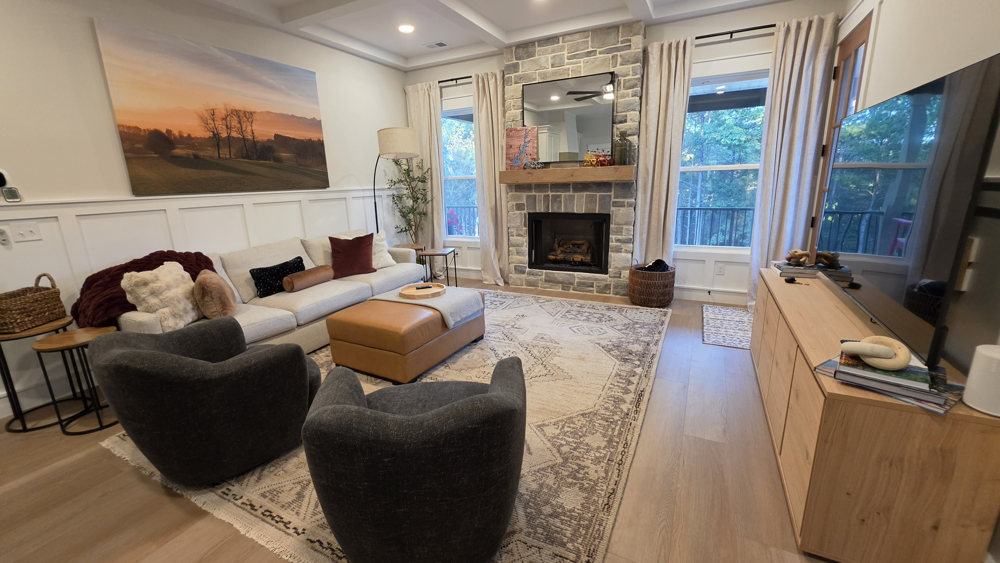
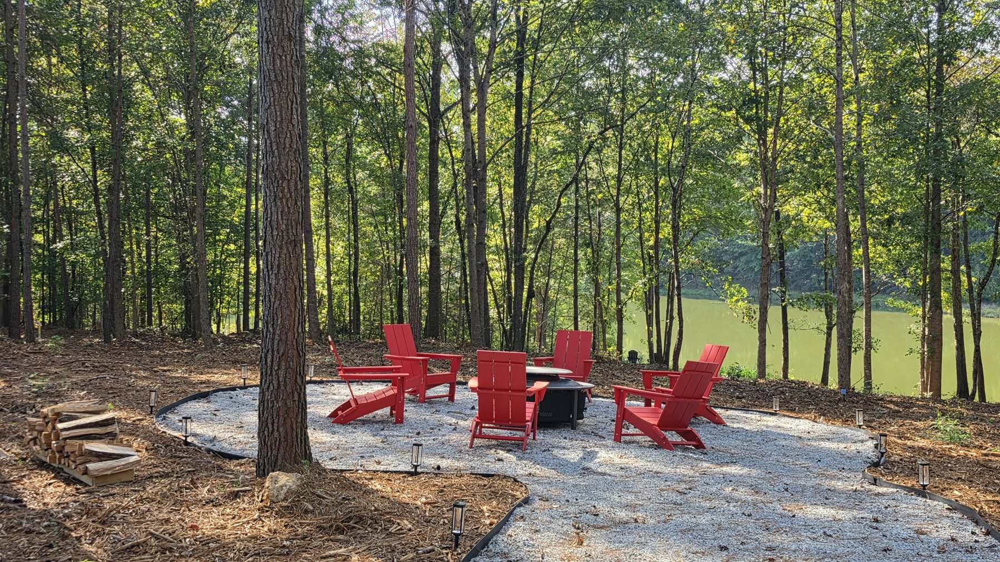
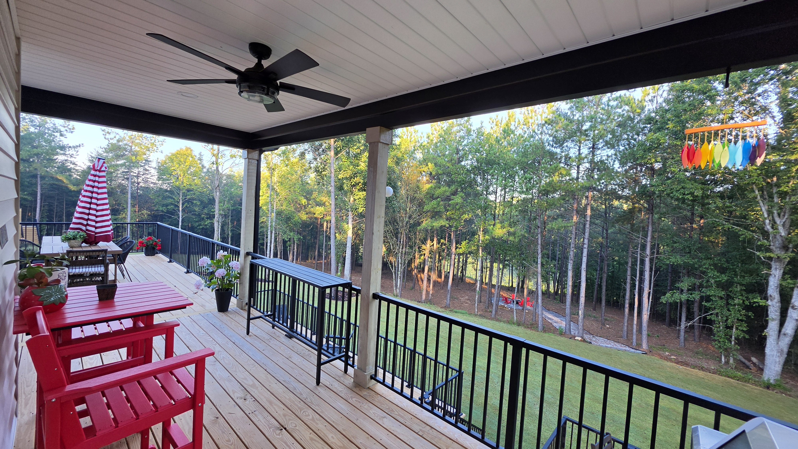
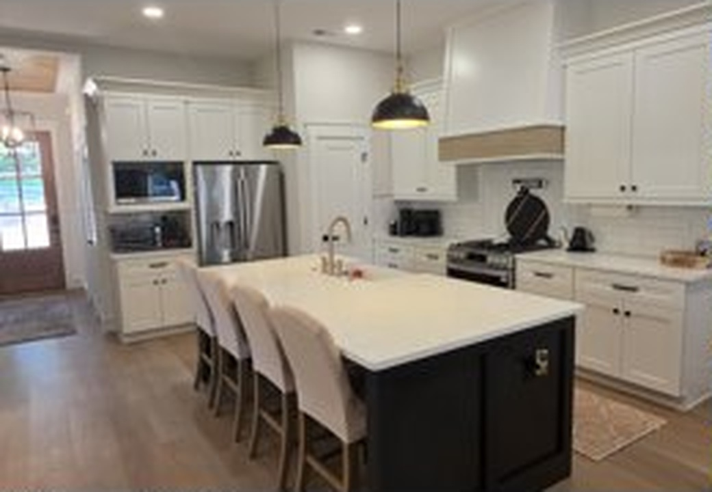
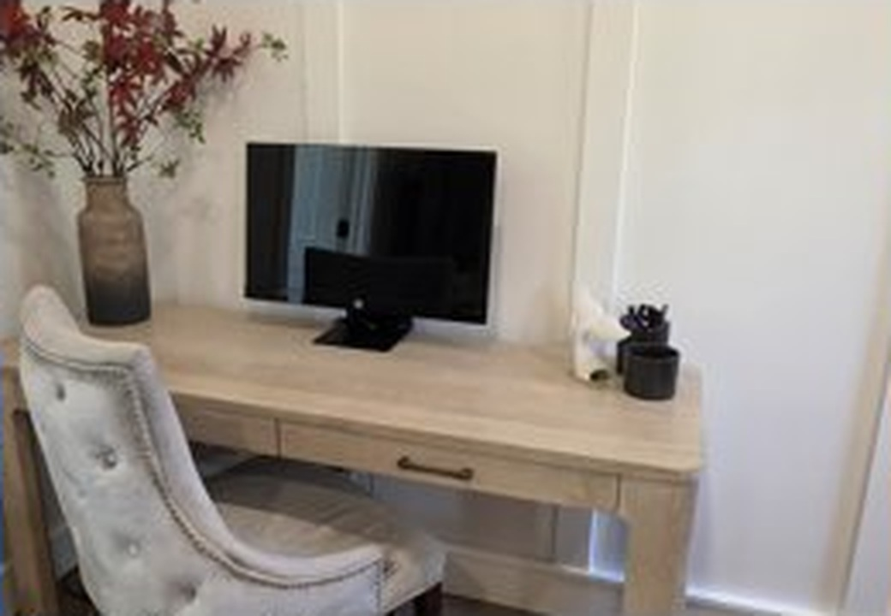
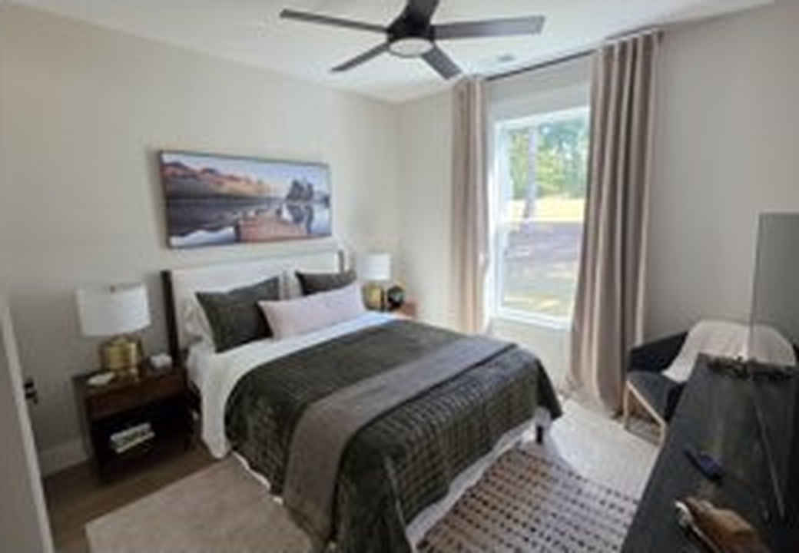
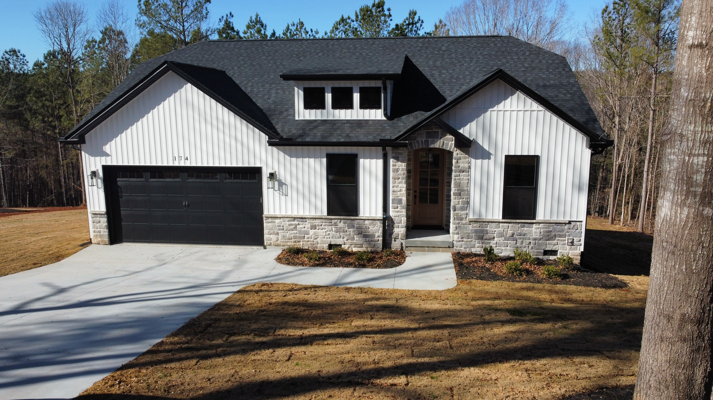
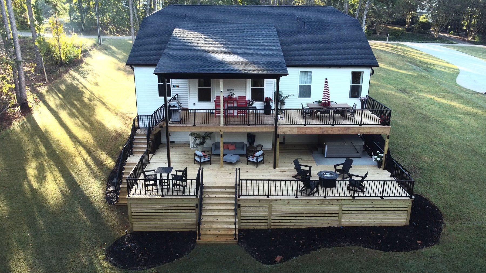

Make yourself at home.
Soak in the private hot tub beneath the trees, gather around the Solo Stove after sunset, stretch out on the two-level deck, and enjoy the quiet of the Upstate setting.
We’ve stocked The Dove with starter coffee and tea, toiletries, laundry detergent, dishwasher pods, paper products, kitchen basics, hot-tub towels, and everyday cleaning supplies.

The amenities you came for.
A look around.
A few views of the actual home and the spaces guests tend to enjoy most.





Check-in & access
Check-in
4:00 PM
Your private entry code is provided through Airbnb before arrival.
Parking
Up to 4 vehicles
Driveway only. Please avoid grass, neighboring property, and blocking nearby access.
Wi-Fi
DoveNetGuest
The password is included in your private check-in message and available inside the home.
Both exterior locks auto-lock after about five minutes. If you have trouble entering the home, contact Nancy.
Comforts that make the stay easier.


Coffee & tea
Nespresso VertuoPlus and Fellow Aiden Precision Coffee Maker, plus starter coffee, tea, sweeteners and creamer.
Entertainment
Roku TVs use Guest Mode. Choose your checkout date when signing in so Roku automatically signs you out.
Books, playing cards and a puzzle are available too.
Remote work
A guest-use monitor is stored in the Primary Bedroom closet. Cables and adapters are in the basket beneath the Primary Bedroom TV.
Laundry
Washer, dryer and liquid detergent are available. At checkout, place used towels in the laundry-room hamper—no need to start a load.
Bedrooms
A charging station is available on one nightstand in each bedroom. Extra bedding is stored in the respective bedroom closets.
Bathrooms
Shampoo, conditioner, body wash and hand soap are provided. A hair dryer is available in the Primary Bathroom.
Good to know
Temperature
The Ecobee is generally set around 72°F for cooling or 70°F for heating. Adjust within the available range for comfort, and leave it as-is at checkout.
Windows & fans
Please keep windows closed. Bedroom fan remotes should be returned to their wall holders after use.
Microwave
Press the LG microwave’s open/release button before pulling the door—no need to force it.
Septic system
Flush only toilet paper. Place wipes, feminine products and paper towels in the trash. Scrape food into the trash and use the garbage disposal only for small residual food particles.

The best parts of staying in.
Fire beneath the trees.
Complimentary firewood is provided while supplies last.
Slow down and soak.
The 7-person Hot Spring Limelight Pulse is on the lower deck. The stairs and lower deck illuminate after dark.
The spa is generally set to 100°F for arrival. You may adjust normal temperature, jets and lights up to the built-in maximum of 104°F.
- Maximum 7 people
- Children under 5 may not use the hot tub
- Guests under 18 must be actively supervised
- No glass, food or added bath products in the spa
- Rinse off sunscreen, lotion, oils and makeup first
- Avoid use while impaired
- Near 104°F, about 15–20 minutes is a sensible soak
When finished, turn off jets and lights, replace and secure the cover, and bring towels inside.
Official Hot Spring Limelight quick-start guide. The link opens to the control-panel instructions for temperature, jets, and lights.
Hot-tub towels
Separate hot-tub towels are in the front entry closet.
If the water looks unusual
If it appears unusually cloudy, discolored or foamy—or has a strong chemical odor—please don’t use the spa and contact us.
Start. Enjoy. Finish.
- Start
Use supplied firewood and fire starters for a modest, controlled fire. Keep the spark screen in place after the fire is established. - Enjoy
Never leave an active fire unattended. Supervise children closely. S’mores are welcome; reusable roasting sticks are with the kitchen utensils. - Finish
Let flames burn down completely. Once only embers remain, place the metal lid over the Solo Stove. Never lid active flames.
Please skip the fire pit during high winds, unsafe weather or local burn restrictions.
Grill
- Open the lid and propane valve.
- Use the built-in igniter and cook.
- Brush the warm grates and wipe obvious spills.
- Turn burners off and close the propane valve.
A full spare propane tank is available in the garage.
Charge while you unwind.
A Tesla Universal Wall Connector is available inside the garage for complimentary guest use and supports Tesla and compatible non-Tesla EVs.
You may manually open the garage door from inside to route the charging cable to your vehicle. Please return the connector neatly to the wall unit when finished.
Tesla charging guide ↗Borrow what you need.
Coolers, picnic bags, two portable chairs and fishing poles are stored in the garage. Picnic blankets are in the front entry closet.
Fishing poles are provided for appropriate off-property fishing locations.
Simple things to know.
Outdoors
The backyard includes slopes and uneven terrain. Please supervise children. The nearby pond is viewing-only; do not walk down to or access the pond area.
Fire & CO
Combination smoke/CO alarms are installed in every bedroom and main living areas.
Fire extinguishers: laundry room, garage worktable, upper deck.
Severe weather
If a tornado warning is issued, move to the interior hallway near the garage/laundry room, away from windows and exterior doors.
Keep it easy.
- No smoking or vaping anywhere on the property
- No pets
- Quiet hours: 10 PM–8 AM
- No parties or events; small celebrations are welcome within occupancy, parking and quiet-hour limits
- Primary booking guest must be at least 25
- Only registered guests may stay overnight; contact us if daytime visitors bring the total above 8
- Please respect neighboring property and keep vehicles in The Dove’s driveway
Temporary decorations are welcome if they don’t damage the home. Please avoid nails, tacks, screws, adhesives, glitter or confetti.
Beyond that, make yourself comfortable, enjoy the amenities, and treat the home as you would a place you care about.
Peaceful by design.
Please keep outdoor noise down from 10 PM–8 AM, park only in The Dove’s driveway, and stay on The Dove property rather than neighboring yards or driveways.

Wooded, private-feeling, and close to everything.
The Dove sits in a quiet Upstate setting with generous outdoor space, a two-level deck, fire-pit area and easy access to Clemson, Lake Keowee, Lake Hartwell and the waterfalls of Oconee County.
Where we’d send friends.
Choose your kind of day.
🏈 Clemson & game day
Walk campus, see Memorial Stadium and Bowman Field, or explore downtown Clemson. Football Saturdays bring heavier traffic, road controls and changing parking arrangements—plan ahead.
Official Clemson football parking ↗🌊 Lake Keowee & Lake Hartwell
Plan a day around kayaking, paddleboarding, boating, swimming, fishing or a scenic shoreline drive.
Explore Oconee County ↗🥾 Waterfalls & hiking
Easy: Station Cove Falls; Stumphouse Tunnel + Issaqueena Falls.
Moderate: Yellow Branch Falls; Blue Ridge Railroad Trail.
Stumphouse Park ↗
🌆 Downtown Seneca
Stroll Ram Cat Alley, grab coffee or dinner, visit Keowee Brewing Company, look for live music and finish with dessert.
Ram Cat Alley map ↗Checkout is 10:00 AM.
There’s no long chore list. We simply ask that you:
- Load and start the dishwasher.
- Place used towels in the laundry-room hamper.
- Remove personal food and beverages from the refrigerator, freezer and pantry. Leave items provided with the home.
- Tie trash bags and place them in the lidded garbage can in the garage.
- Turn off interior lights and ceiling fans.
- Make sure exterior doors are fully closed.
You can leave the beds as they are. There’s no need to start laundry or change the thermostat.
Safe travels—and thank you for staying at The Dove.

Woodland retreat · Seneca, SC